For text-to-image model, we will be using the DeepFloyd IF Diffusion model, a text-to-image model downloaded from hugging face.
Here are some interesting prompts:
Here are three images generated by DeepFloyd:
The prompts of images from left to right are respectively:
'a drawing of a penguin'
'a drawing of a giraffe'
'a river flowing through glowing crystal rocks'
As num_inference_steps differs, the generated image from a fixed text prompt will differ significantly:
Prompt = 'a river flowing through glowing crystal rocks'
num_inference_steps = 20 (left) vs. num_inference_steps = 200 (right)
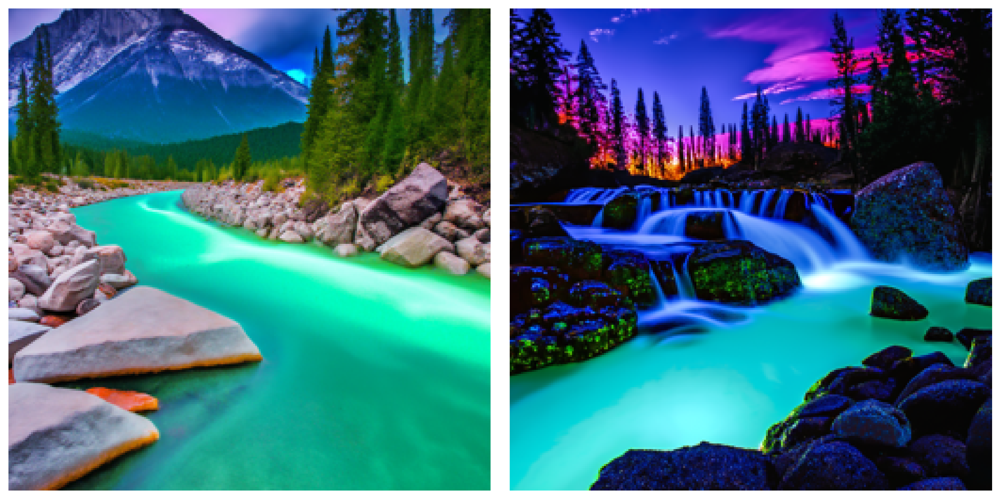
For all of the images generated, seed = 180
Implementations of forward():
The forward diffusion step defines how a clean image is gradually corrupted by noise over time. In practice, this step takes an original image and produces a noisy version corresponding to a chosen timestep.
Formally, the forward process is described by the conditional distribution:
\[ q(x_t \mid x_0) = \mathcal{N}(x_t; \sqrt{\bar{\alpha}_t} x_0, (1 - \bar{\alpha}_t)\mathbf{I}) \]
This distribution can be sampled explicitly using the equivalent expression:
\[ x_t = \sqrt{\bar{\alpha}_t} x_0 + \sqrt{1 - \bar{\alpha}_t} \epsilon \quad \text{where } \epsilon \sim \mathcal{N}(0, \mathbf{I}) \]
In other words, generating \(x_t\) at timestep \(t\) involves two operations: first scaling the original image by \(\sqrt{\bar{\alpha}_t}\), and then adding Gaussian noise, which is sampled from a standard Gaussian distribution, whose magnitude is controlled by \(1 - \bar{\alpha}_t\).
In the implementation, we use the precomputed array alphas_cumprod,
which stores \(\bar{\alpha}_t\) for each timestep \(t \in [0, 999]\).
Early timesteps correspond to nearly clean images since \(\bar{\alpha}_t \approx 1\),
while later timesteps produce heavily corrupted images as \(\bar{\alpha}_t\) approaches zero.
To verify our implementation, we apply the forward process to the resized 64×64 campanile image at timesteps \(t = 250, 500, 750\). The resulting outputs should visually demonstrate a clear progression from lightly noisy to highly noisy images.
Here's the Campanile at noise level [250, 500, 750]:
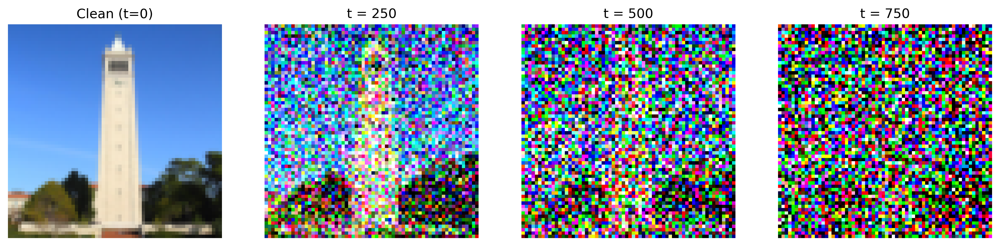
Previously, we learned that Gaussian blur can smooth out noise to some extent,
so here we tried Gaussian blur, with kernel_size = 5 and sigma = 9.0.
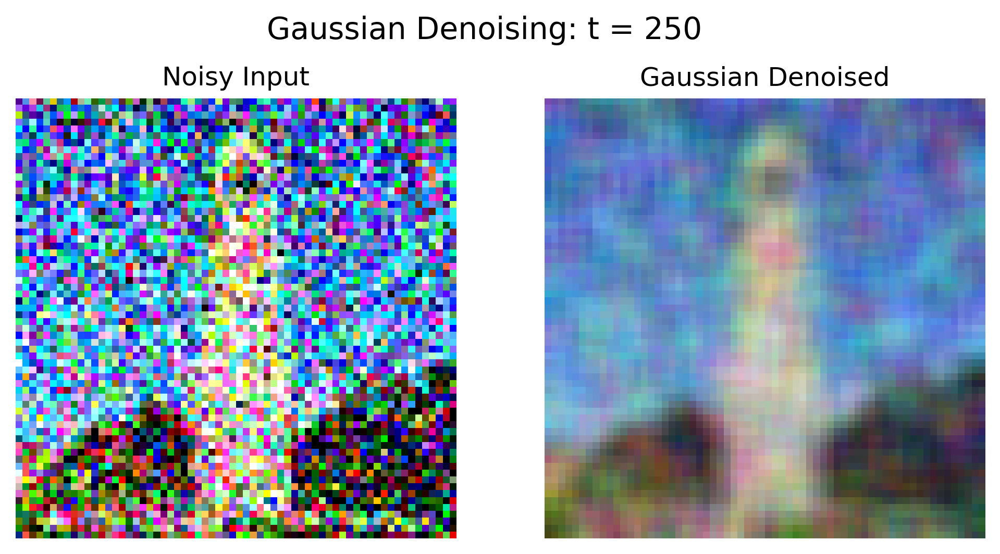
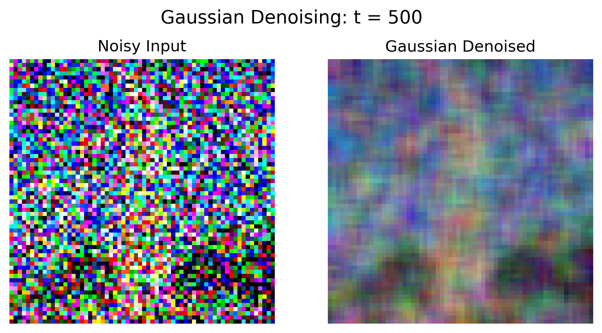
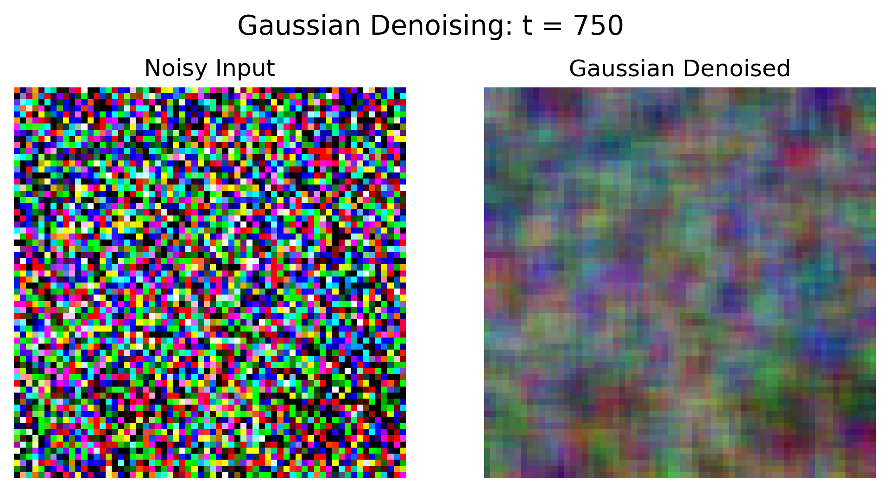
Apparently, the denoised results don't look good. So the classical Gaussian-denoise process may not work well and we need other denoising methods.
Implementations of denoising：
For each timestep \(t\), we first generate a noisy image \(x_t\) from the clean image \(x_0\) using the forward diffusion process:
\[ x_t = \sqrt{\bar{\alpha}_t} x_0 + \sqrt{1 - \bar{\alpha}_t} \epsilon, \quad \epsilon \sim \mathcal{N}(0, \mathbf{I}) \]
The noisy image \(x_t\), together with timestep \(t\) and a null text embedding, is then passed into the pretrained UNet. The UNet predicts the noise component \(\hat{\epsilon}\) that was added to the image.
Using this predicted noise, we recover an estimate of the original image by inverting the forward process:
\[ \hat{x}_0 = \frac{x_t - \sqrt{1 - \bar{\alpha}_t} \hat{\epsilon}}{\sqrt{\bar{\alpha}_t}} \]
Finally, the reconstructed image \(\hat{x}_0\) is converted back to pixel space and saved. Repeating this for larger \(t\) values shows that denoising becomes more difficult as the noise level increases.
Visualizations of the original image, the noisy image, and the estimate of the original image:
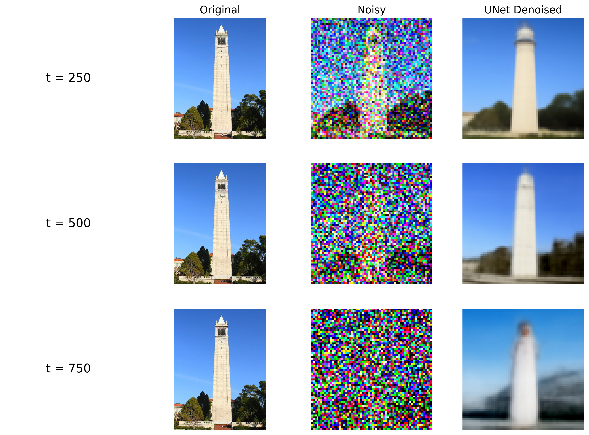
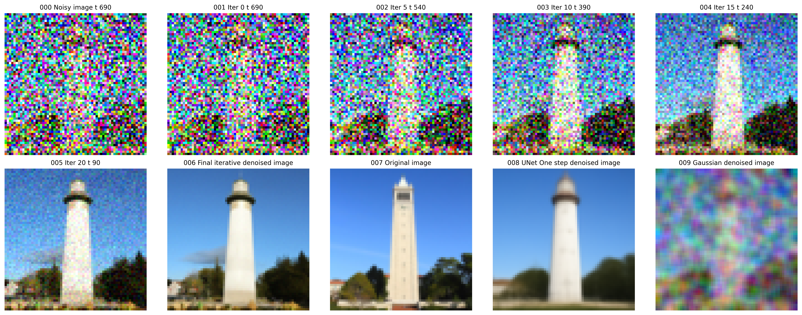
To denoise iteratively, we can start from x_1000, to x_999, ..., x_0. However, this is time-consuming and expensive. In fact, we can skip steps using strided_timesteps = [990, 960, ...0] (in this assignment, we use a regular step of 30 for simplicity). The formula to calculate x_t' (the denoised image at step t'):
\[ x_{t'} = \frac{\sqrt{\bar{\alpha}_{t'}}\,\beta_t}{1-\bar{\alpha}_t} \, x_0 + \frac{\sqrt{\alpha_t(1-\bar{\alpha}_{t'})}}{1-\bar{\alpha}_t} \, x_t + v_{\sigma} \]
where:
add_variance(img, noise) to add \(v_x\).
Implementations of iterative_denoise():
1. (forward) Use t = strided_timesteps[i_start = 10] and \(\bar{\alpha}_t\) = alphas_cumprod[t] to get an initial noisy image.
2. Iteratively get t = strided_timesteps[i], \(\bar{\alpha}_t\) = alphas_cumprod[t], \({\alpha}_t\), \({\beta}_t\), etc.
3. Pass \(x_t\) and \(t\) into UNet to predict the corresponding mean and variance:
\[
\epsilon_\theta(x_t, t), \quad \sigma_\theta^2(x_t, t)
\]
4. Use the estimated noise \({\epsilon}_{\theta}\) to estimate the clean image \(x_0\) by inverting the forward process:
\[
\hat{x}_0 = \frac{x_t - \sqrt{1 - \bar{\alpha}_t} {\epsilon}_{\theta}}{\sqrt{\bar{\alpha}_t}}
\]
5. Compute the next image \(x_{t'}\) by using the formula below,
linearly interpolating current estimated clean image \(\hat{x}_0\) and current noisy image \(x_t\),
adding a predicted noise \(v_{\sigma}\).
\[
x_{t'} =
\frac{\sqrt{\bar{\alpha}_{t'}}\,\beta_t}{1-\bar{\alpha}_t} \, \hat{x}_0
+
\frac{\sqrt{\alpha_t(1-\bar{\alpha}_{t'})}}{1-\bar{\alpha}_t} \, x_t
+
v_{\sigma}
\]
When we use add_variance() to add \(v_{\sigma}\),
we update \(x_{t'}\) stochastically using the corresponding predicted standard deviation \(\sigma_\theta(x_t, t)\):
\[
x_{t'} \leftarrow x_{t'} + \sigma_t z,
\qquad
z \sim \mathcal{N}(0, I)
\]
Even with the same prompt and at the same timestep,
we can get different denoised images everytime we process iterative_denoise()
since the function samples fresh noise \(z \sim \mathcal{N}(0, I)\) (\(v_{\sigma} = \sigma_t z\)) every time.
DDPM is inherently stochastic.
Here are 5 sampled images:
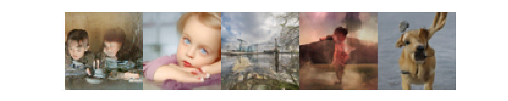
Implementations of iterative_denoise_cfg()
The implementation of iterative_denoise_cfg() and iterative_denoise() should be almost identical.
The only difference is the estimated noise \({\epsilon}_{\theta}\) we eventually use.
Without CFG, \({\epsilon}_{\theta}\) is directly from UNet with one prompt;
with CFG, it is a linear interpolation between a conditional noise and an unconditional noise,
which are respectively predicted from two different prompts (using a null embedding for the unconditional noise).
Here's a breakdown of the implementation of iterative_denoise_cfg():
model_output = stage_1.unet(... prompt_embeds ...), uncond_model_output = stage_1.unet(... uncond_prompt_embeds ...)
model_output is to get a conditional noise estimate \(\epsilon_c\) using the text prompt "a high quality photo"uncond_model_output is to get an unconditional noise estimate \(\epsilon_u\) using the empty prompt.\[ \epsilon = \epsilon_u + \gamma(\epsilon_c - \epsilon_u), \]
where \(\gamma\) (guidance scale) controls guidance strength (i.e. how much the output is constrained by the input condition).
Larger values emphasize prompt alignment at the cost of creativity.
The formula above is equivalent to
\[ \epsilon = \gamma · \epsilon_c - (1 - \gamma) \epsilon_u, \]
i.e. linear interpolation of the conditional noise and the unconditional noise.
As \(\gamma\) > 1, we will get images of much higher quality (see the five sampled images below, where \(\gamma\) = 7).
Use the estimated noise \({\epsilon}_{\theta}\) to estimate the clean image \(\hat{x}_0\) by inverting the forward process
(same as the iterative denoising process without CFG):
\[
\hat{x}_0 = \frac{x_t - \sqrt{1 - \bar{\alpha}_t} {\epsilon}_{\theta}}{\sqrt{\bar{\alpha}_t}}
\]
Compute the next image \(x_{t'}\) by using the formula below (same as the iterative denoising process without CFG),
linearly interpolating current estimated clean image \(\hat{x}_0\) and current noisy image \(x_t\),
adding a predicted noise \(v_{\sigma}\).
\[
x_{t'} =
\frac{\sqrt{\bar{\alpha}_{t'}}\,\beta_t}{1-\bar{\alpha}_t} \, \hat{x}_0
+
\frac{\sqrt{\alpha_t(1-\bar{\alpha}_{t'})}}{1-\bar{\alpha}_t} \, x_t
+
v_{\sigma}
\]
When we use add_variance() to add \(v_{\sigma}\),
we update \(x_{t'}\) stochastically using the corresponding predicted variance,
which is converted to its standard deviation \(\sigma_\theta(x_t, t)\):
\[
x_{t'} \leftarrow x_{t'} + \sigma_t z,
\qquad
z \sim \mathcal{N}(0, I)
\]
Even with the same prompt and at the same timestep,
we can get different denoised images everytime we process iterative_denoise()
since the function samples fresh noise \(z \sim \mathcal{N}(0, I)\) (\(v_{\sigma} = \sigma_t z\)) every time.
DDPM is inherently stochastic.
5 images of "a high quality photo" with a CFG scale of \(\gamma\) = 7
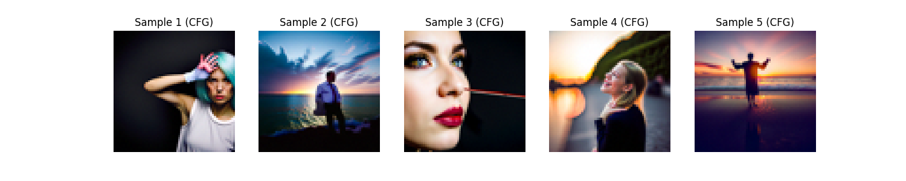
We first use the prompt "a high quality photo".
Edits of the Campanile image:
Using the given prompt at noise levels [1, 3, 5, 7, 10, 20]
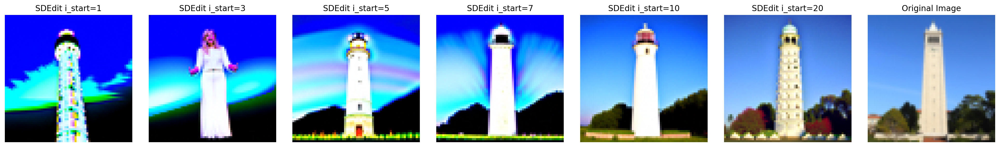
Edits of 2 of my own test images
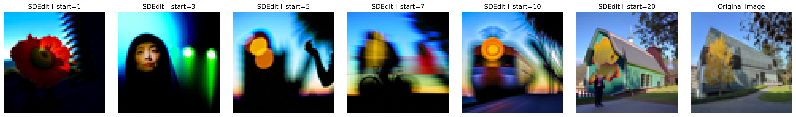
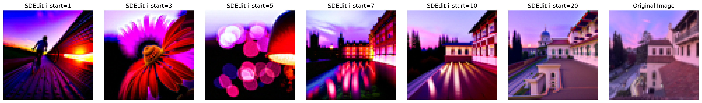
web image:
https://cdn.dribbble.com/userupload/19327683/file/original-e8c5e1defc7c3710fab0379a510b48c5.jpg
Edited using the above method for noise levels [1, 3, 5, 7, 10, 20]
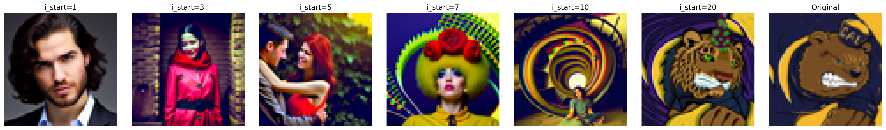
hand drawn images:
Edited using the above method for noise levels [1, 3, 5, 7, 10, 20]
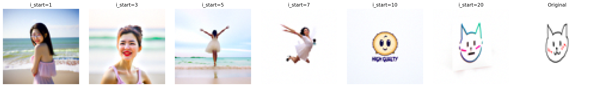
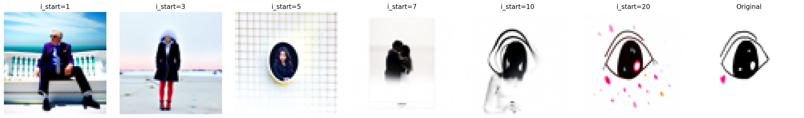
Implementations of function inpaint():
iterative_denoise_cfg().
For detailed implementation and formulas used in calculation,
please refer to iterative_denoise_cfg() in Part1.6,
but basically:inpaint() and iterative_denoise_cfg() is the region
where the model can modify the pixel values, or say, the updated image that we pass into UNet in every iteration.
In iterative_denoise_cfg(): image = pred_prev_image
The model is free to modify every pixel at every timestep.
While in inpaint(): image = mask * pred_prev_image + (1 - mask) * noisy_orig
The model hallucinates only inside the unmasked region, where the pixel values of the binary mask are all 1s.
\[ x_t \leftarrow m \cdot x_t + (1 - m) \cdot \text{forward}(x_{\text{orig}}, t) \]
However, in inpaint(), after we blocked out some area,
the model can still see the masked region.
The UNet is not hallucinating in isolation, but always running on the full image tensor image.
The tensor we feed into the UNet at the next timestep still contains the (noised) original content outside the mask
(i.e. noisy_orig in image = mask * pred_prev_image + (1 - mask) * noisy_orig
is attained from the forward process on the entire original image)
Campanile inpainted
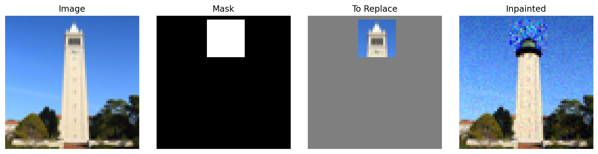
Two own images inpainted
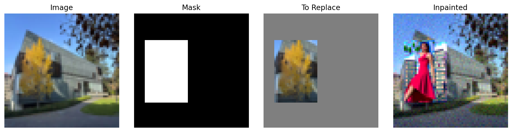
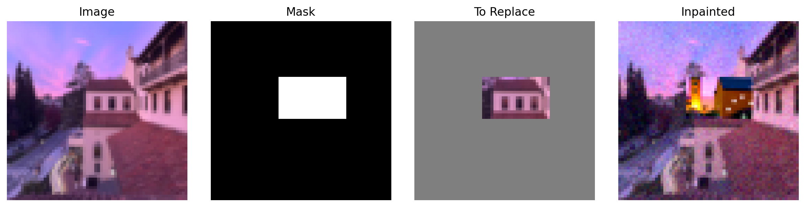
We simply change a text prompt and then run Part1.7 again.
Edits of the Campanile:
Prompt: a river flowing through glowing crystal rocks
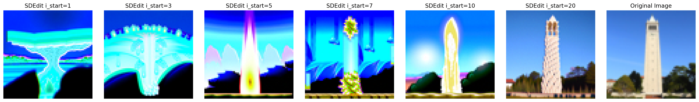
Edits of self-chosen image 1 (the music library):
Prompt: a painter working on an endless horizon canvas
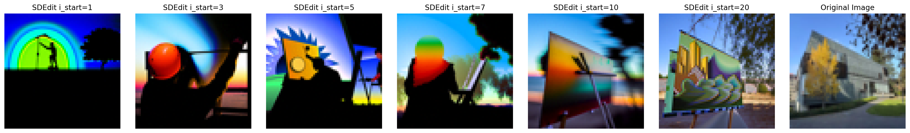
Edits of self-chose image 2 (International House):
Prompt: a river flowing through glowing crystal rocks
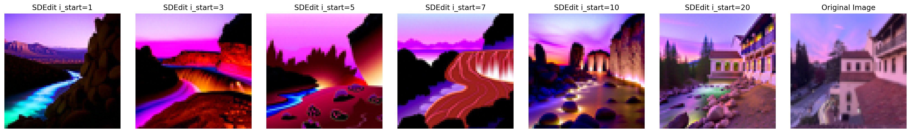
Implementation of visual_anagrams():
Two different semantic interpretations under a 180° flip are achieved by enforcing consistency between two classifier-free guided (CFG) noise predictions: one on the original image orientation and one on a flipped version of the image.
iterative_Denoise_cfg() in Part1.6 (for detailed implementation, please refer to that part).
We apply CFG noise estimate for prompt1 and prompt2 respectively, and then take their average.
To be more specific:
(1) CFG noise estimate for prompt 1 (original orientation):
The UNet is evaluated twice on the current image:
once with the conditional prompt \(p_1\) and once with the unconditional prompt.
The two predictions are combined using classifier-free guidance:
\[
\epsilon_1 = \epsilon_u + \gamma(\epsilon_{p_1} - \epsilon_u)
\]
eps1 = eps_uncond + scale * (eps_p1 - eps_uncond)
(2) CFG noise estimate for prompt 2 via image flipping:
To enforce flip consistency, the image is flipped spatially, and the UNet is
evaluated again using prompt \(p_2\):
flipped_image = torch.flip(image, dims=[2, 3])
CFG is applied in the flipped space:
\[ \epsilon_2^{\text{flip}} = \epsilon_u^{\text{flip}} + \gamma(\epsilon_{p_2}^{\text{flip}} - \epsilon_u^{\text{flip}}) \]
The resulting noise is then flipped back to align with the original orientation:
eps2 = torch.flip(eps2, dims=[2, 3])
(3) Symmetric noise fusion:
The final noise estimate is obtained by averaging the two CFG-guided noise estimates:
\[ \epsilon = \frac{1}{2}(\epsilon_1 + \epsilon_2) \]
eps = 0.5 * (eps1 + eps2)
This enforces that the denoising trajectory is compatible with both prompt
interpretations under a flip transformation.
Two illusions:
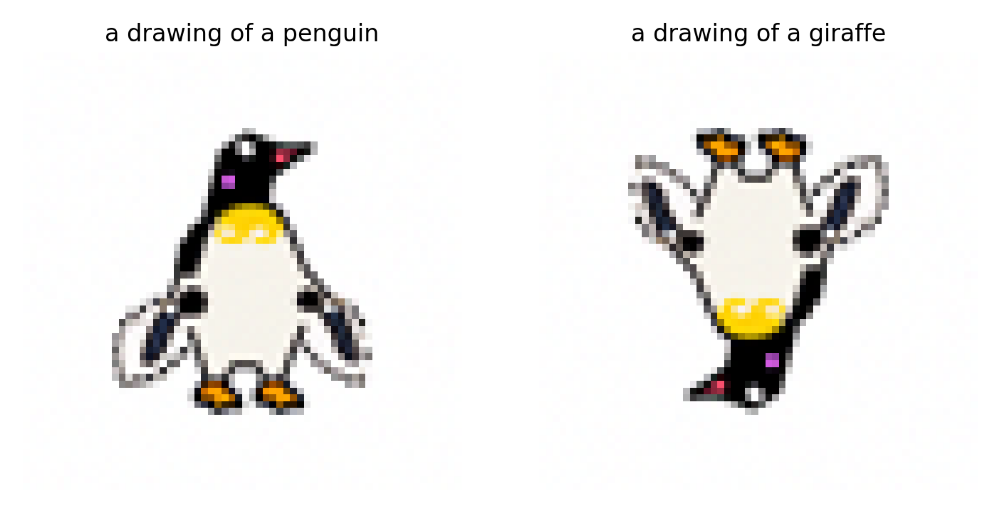
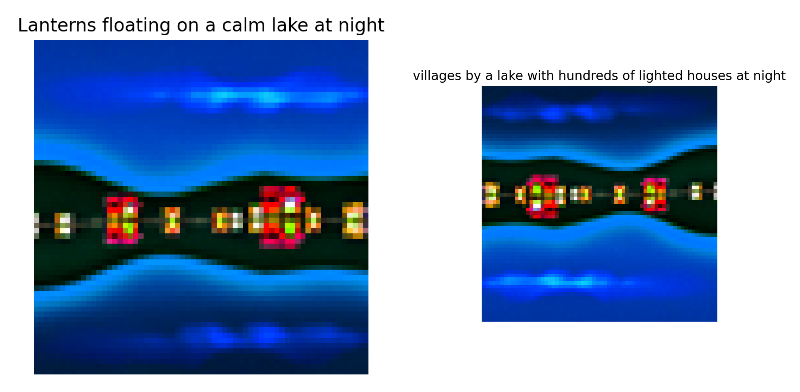
Implementation of make_hybrids():
Again, the only difference between make_hybrids()
and visual_anagrams() or iterative_denoise_cfg() is
the estimated noise we eventually use to calculate the denoise image at the next timestep.
For detailed implementation of the forward process, how we estimate noise through UNet,
and how we calculate the denoised image at the next timestep,
please refer to Part1.6 :)
For make_hybrids(), we apply previous knowledge of making hybrids to noise rather than pixels:
eps1_low = TF.gaussian_blur(eps1, kernel_size=33, sigma=2.0)
eps2_low = TF.gaussian_blur(eps2, kernel_size=33, sigma=2.0)
eps2_high = eps2 - eps2_low
Two illusions:
I really tried several times with different prompts. Here are two of the ones which I think work. There may be better visuals, but from these two, we see that the code works well.
Pair1:
prompt1 (keep low frequency): a smooth geometric shape
prompt2 (keep high frequency): a detailed butterfly wing pattern
Pair2:
prompt1 (keep low frequency): a gentle green wave
prompt2 (keep high frequency): a calm forest landscape
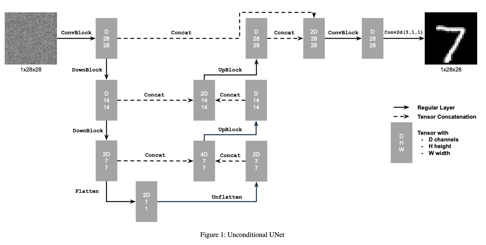
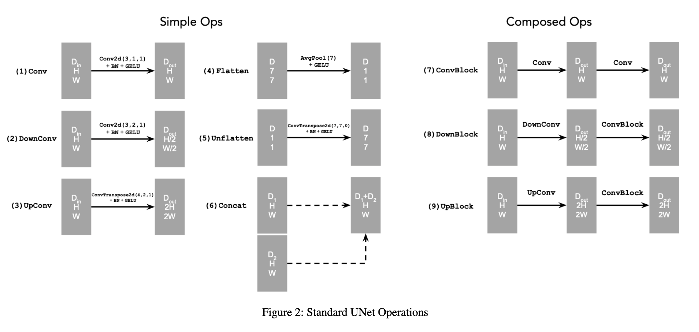
Basically, the tensor operations are doing the following:
Conv2d(3, 1, 1) + BatchNorm + GELU
(3, 2, 1) for spatial downsampling
(4, 2, 1) for upsampling
To train our denoiser, we need to generate training data pairs (z, x), where each x is a clean MNIST digit and z is the noised image. For each training batch, we can generate z from x using the following noising process:
\[ z = x + \sigma \epsilon, \quad \text{where } \epsilon \sim \mathcal{N}(0, I). \]
So the image should be more and more noisy as \(\sigma\) increases.
Here's the visualization of the noising process using \(\sigma\) = [0.0, 0.2, 0.4, 0.5, 0.6, 0.8, 1.0]:
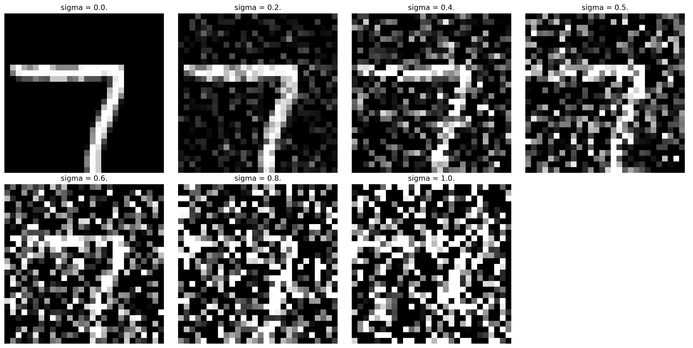
Hyperparameters:
Training loss curve plot every few iterations during the whole training process of sigma = 0.5:
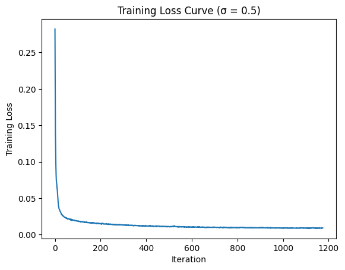
Sample results on the test set with noise level 0.5 after the first and the 5-th epoch:
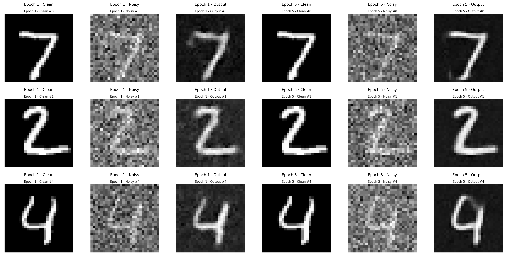
In Part1.2.1, we trained UNet with \(\sigma\) = 0.5. Now in Part1.2.2, we test the performance of the UNet with other \(\sigma\) values that the model hasn't been trained on (\(\sigma\) = [0.0, 0.2, 0.4, 0.5, 0.6, 0.8, 1.0]).
Here are some sample results on the test set with out-of-distribution noise levels after the model is trained. As is shown in the grid, the model's performance decreases as \(\sigma\) increases.
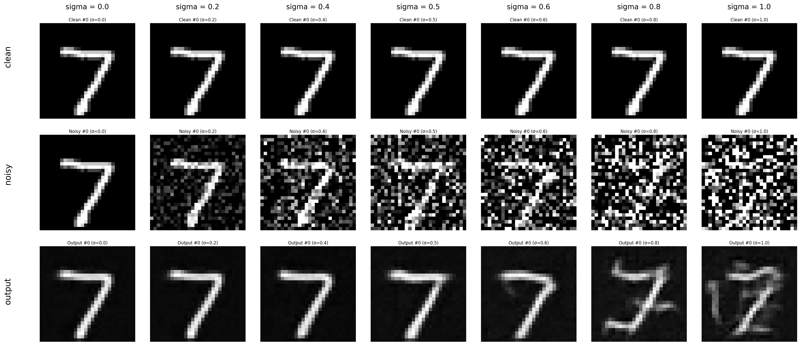
Previously, we were denoising on noised images. In this section, we denoise on pure noise sampled directly from a standard Gaussian distribution.
Training loss curve:
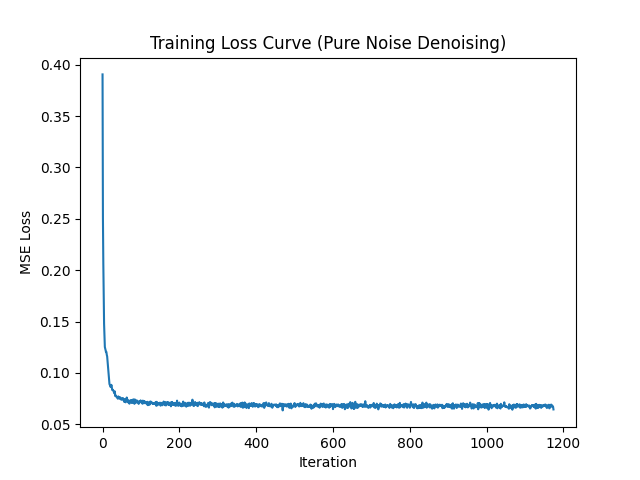
Sample results on pure noise after the first and the 5-th epoch:
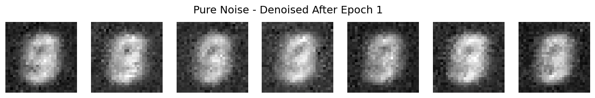
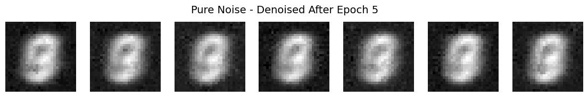
A brief description of the patterns observed in the generated outputs and explanations for why they may exist:
As observed, the results after epoch 1 and 5 are very blurry and similar.
We can't decide which digit each image is showing.
This is essentially because the model is a denoiser but not a generator.
UNet is trained on:
Now we feed \( z \sim \mathcal{N}(0, I) \), which gives almost no clue which the predicted digit should be. The model can't pick a specific digit confidently, so it chooses to output “the safest average thing that reduces error over many possibilities”. That's why all our predicted outputs from pure noise look similar and blurry.
Now we train a flow matching model so that we can iteratively denoise the images rather than doing one-step denoising. This will give us denoised outputs of much higher quality.
To perform iterative denoising, we must first specify how intermediate noisy states are generated. A straightforward choice is to define these states as a linear interpolation between a pure noise sample x₀ and a clean data point x₁ drawn from the training set:
\[ x_t = (1 - t)x_0 + t x_1 \quad \text{where } x_0 \sim \mathcal{N}(0,1), \; t \in [0,1]. \]
This construction defines a continuous trajectory through data space, parameterized by time t, that connects the noise distribution p₀(x₀) to the data distribution p₁(x₁). When t is small, the sample remains close to noise; as t increases, the sample progressively resembles clean data.
This trajectory induces a vector field whose temporal derivative describes how points move along the path from noise to data. Interpreting this derivative as a flow velocity, we obtain
\[ u(x_t, t) = \frac{d}{dt} x_t = x_1 - x_0. \]
The learning objective is therefore to train a UNet uθ(xt, t) that predicts this flow field. Specifically, the model is optimized to approximate the true velocity u(xt, t) using a mean-squared error loss:
\[ L = \mathbb{E}_{x_0 \sim p_0(x_0),\, x_1 \sim p_1(x_1),\, t \sim U[0,1]} \bigl\| (x_1 - x_0) - u_\theta(x_t, t) \bigr\|^2. \]
To increase the accuracy of predicted images, we add a scalar \(t\) as an input condition that tells the model what is the current noise level. It does not directly go through the Conv layer; instead, it's passed through two linear layers with a GELU, which produces a learned representation of time that can be injected into UNet. The encoder & decoder structure of UNet remain unchanged.
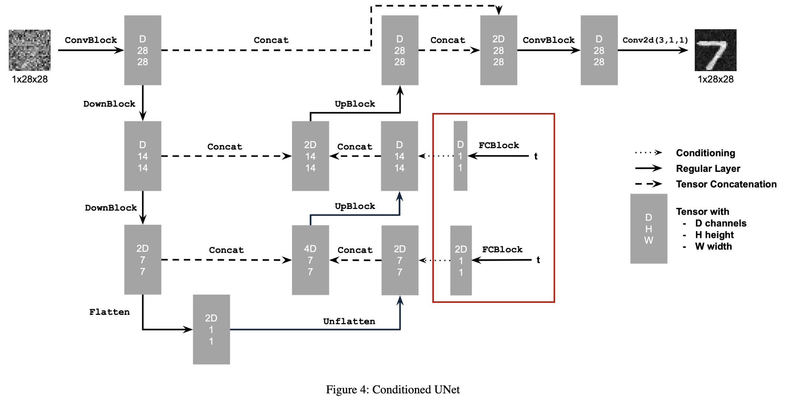
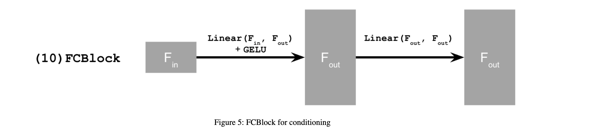
Hyperparameters:
0.1(1.0 / num_epochs)
Training loss curve plot for the time-conditioned UNet over the whole training process:
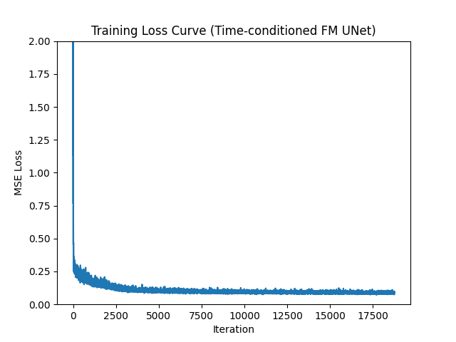
Sampling results from the time-conditioned UNet for 1, 5, and 10 epochs:
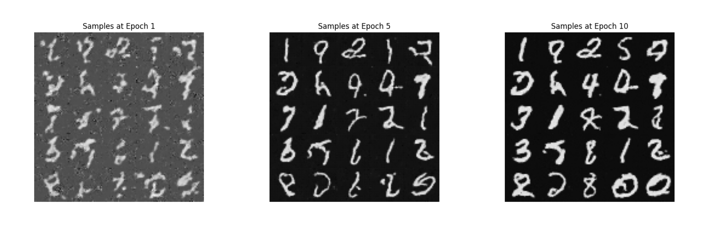
To further improve generation quality and enable class-specific control,
we extend the UNet to condition on the digit label (0–9).
This requires adding two additional FCBlocks to process
the class information. Instead of representing the class as a scalar,
we encode it as a one-hot vector \(c\).
To preserve the ability to run the model without class conditioning—similar to classifier-free guidance—we randomly drop the class conditioning during training by setting \(c = 0\) with probability \(p_{uncond} = 0.1\). This encourages the network to learn both conditional and unconditional behaviors.
With this modification, the UNet becomes a function of the noisy input, timestep, and class label, denoted as \( u_\theta(x_t, t, c) \).
Hyperparameters:
Training loss curve:
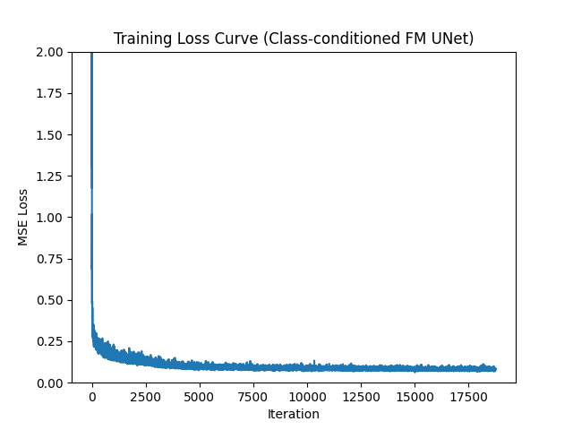
Sampling results from the class-conditioned UNet for 1, 5, and 10 epochs:
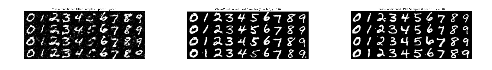
Without scheduler:
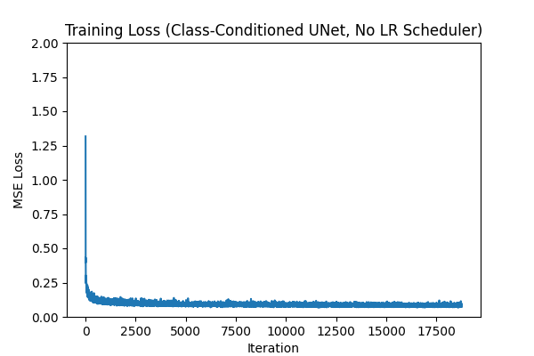
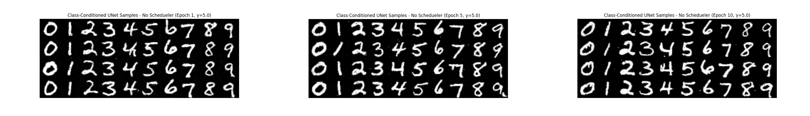
Compensation & Explanations:
To compensate for scheduler, I changed learning rate from 1e-2 to 1e-3.
A scheduler helps to automatically adjust large steps at the beginning of the training process to small steps when the it's closed to converge.
In this assignment, we are using flow matching, simple MNIST, strong inductive bias (UNet), and class conditioning. These make optimization forgiving. Thus, "large steps -> small steps" can be approximated by constantly using medium steps (LR = 1e-3)